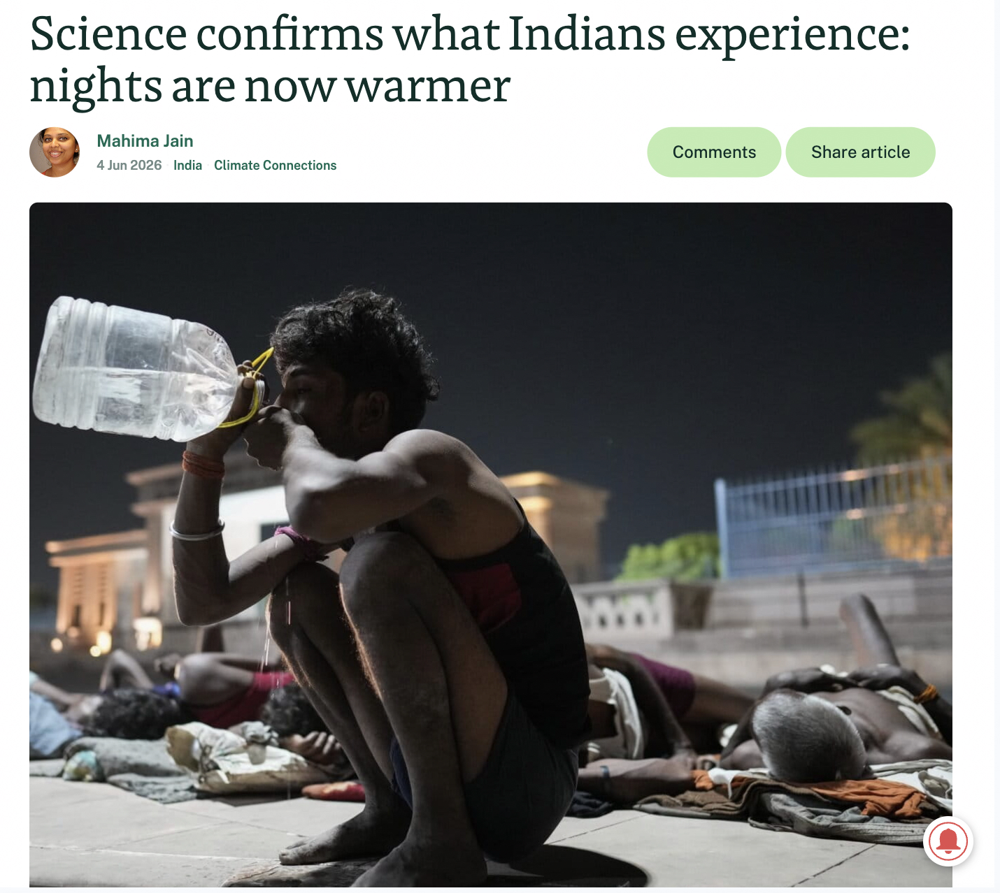

Climate +
data journalism
Using data to recognise evidence, question it, and sharpen climate stories.
Areena Arora
Who am I?
Editorial coder and data journalist working across reporting, code, information design, and visual storytelling.
SESSION ONE
Data is not a software skill first. It is a reporting skill.
Journalistic judgement and inquiry matter more than software know-how.
Start with what the number means.
- What is being counted?
- Who is missing?
- Who benefits from the official definition?
Climate data is not just temperature.
Climate journalism is about physical change, human exposure, public decisions, money, institutions, and unequal consequences.
- Hazards
- Exposure
- Vulnerability
- Official response
A temperature reading does not automatically tell us who was at risk.
A heat story needs an inventory.
Temperature records
Spatial and satellite data
Administrative records
Budgets and procurement
Regulatory records
Health, labour, and livelihoods
Community evidence matters.
Local rain gauges, fisher logs, farmer diaries, panchayat registers, photographs, oral histories, school attendance records, and other crowd sourced data can aid further verification.
What does the official system fail to record?
Count
→Compare
→Locate
Test
→Hold accountable
Count
How many heatwave days occurred? How many claims were approved? How many monitoring stations reported usable data?
Compare
How does this district compare with its past, its neighbours, or a relevant baseline?
Locate
Where is the change concentrated? A map or district table can identify places for field reporting.
Test
Does the evidence support an official claim?
Hold accountable
Who had responsibility, money, authority, or prior warning?
From weather observation
to public-interest story
The story moves from “heat happened” to “protection was unequal.”

“The Decoding Heat series explores shifts in broad and local weather systems; cascading patterns within ecosystems and urban areas; how India is forecasting and planning for its heatwaves, and more. Through our storytelling, we attempt to answer: what drives and is driven by a warming country?”

Minimum temperatures are rising across the country with many states and UTs seeing warmer nights.
Many parts of India are witnessing unusually high minimum temperatures, with several locations recording minimum temperatures close to 30°C. In the last week of May, IMD observations indicated that minimum night temperatures were warmer than normal by 3.1°C to 5.0°C.
- What was the central journalistic question?
- What datasets or records were combined?
- What reporting was still required beyond the data?
Common pitfalls
- Weather is not automatically climate.
- Averages can hide extremes.
- Geographies may not match.
- Raw totals can mislead.
- Official records can undercount.
More pitfalls
- Missing data is often patterned.
- Correlation does not establish cause.
- Short periods invite overclaiming.
- Modelled and observed data are different.
- False precision weakens trust.
Exercise
Choose one theme: heat, floods, water, health, agriculture, energy, law, or climate finance.
- Write one broad statement common in coverage.
- Turn it into a data-led question about unequal impact.
- Turn it into a data-led question that tests accountability.
Data does not replace reporting.
It can tell us what to count, where to look, whose claim to test, and who may be missing.